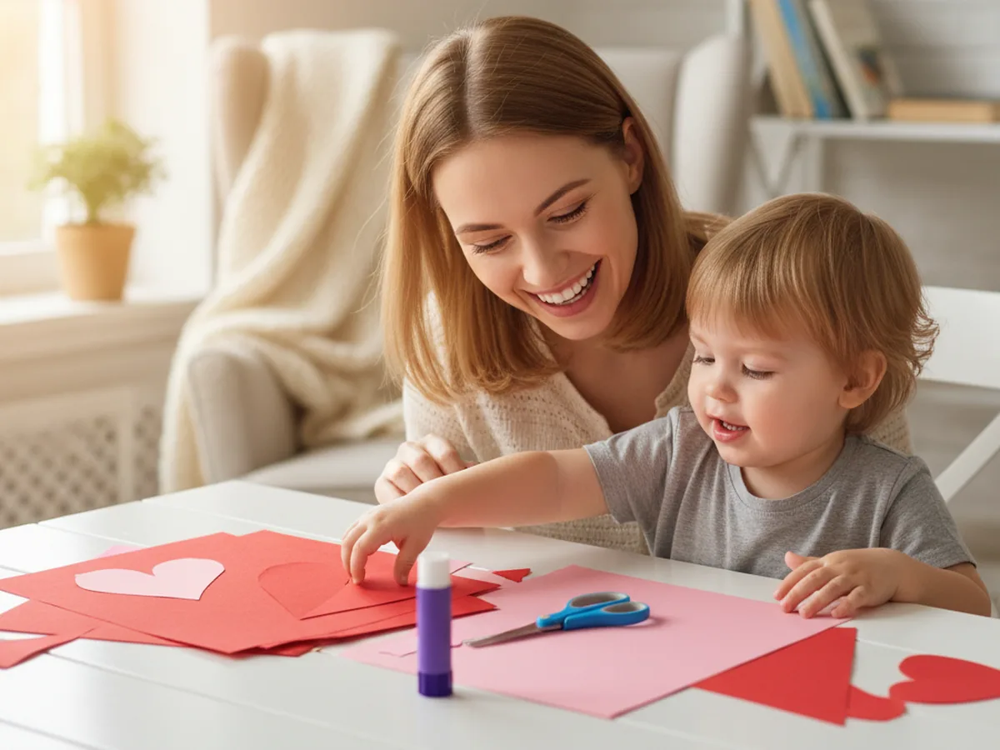
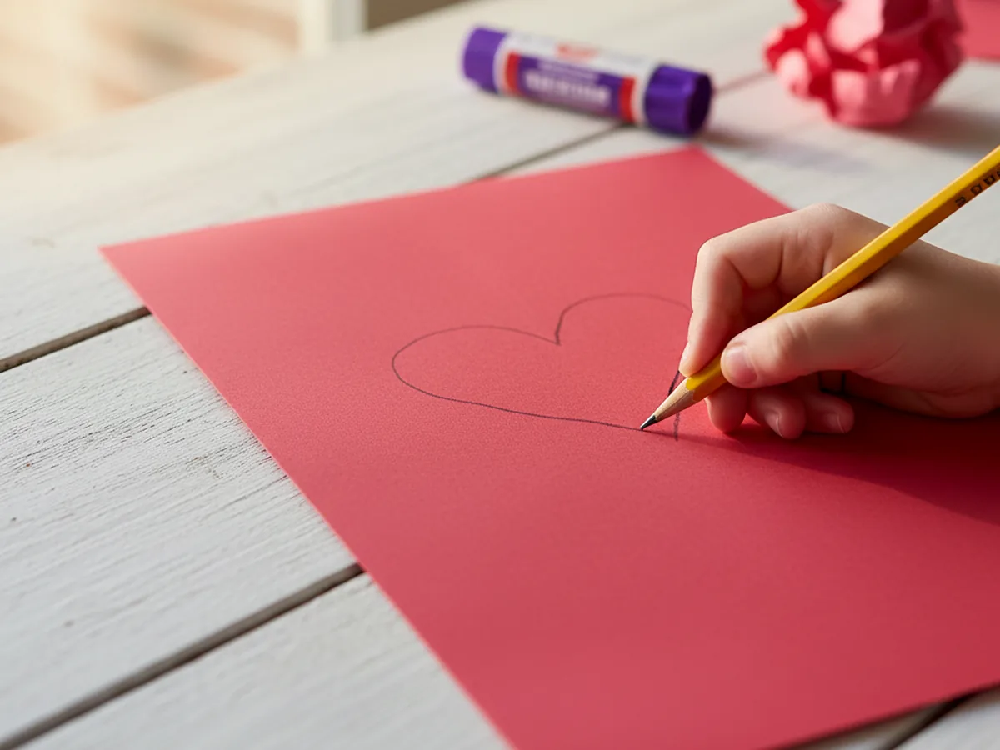
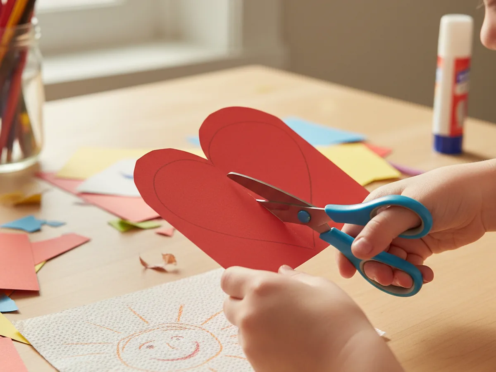
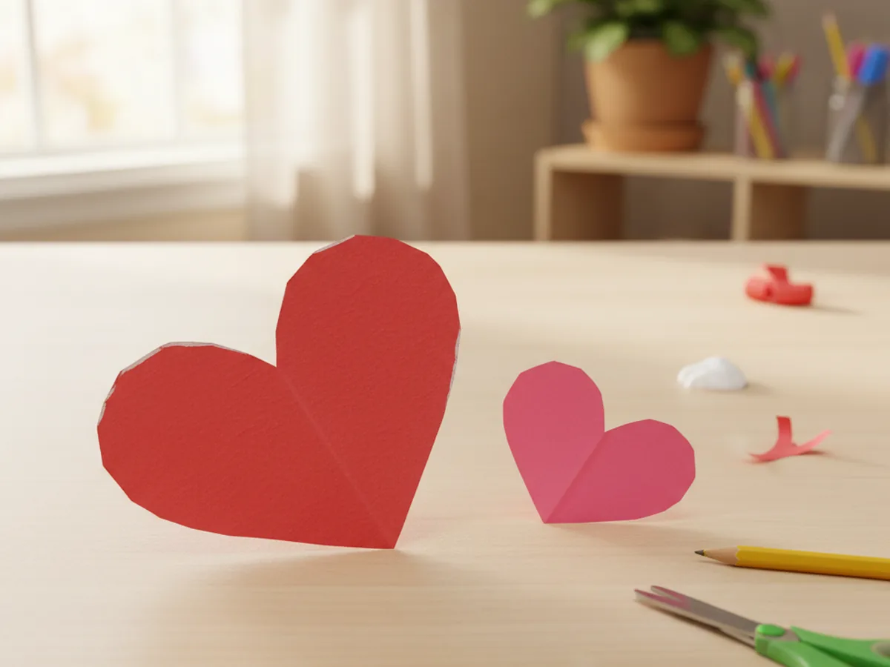
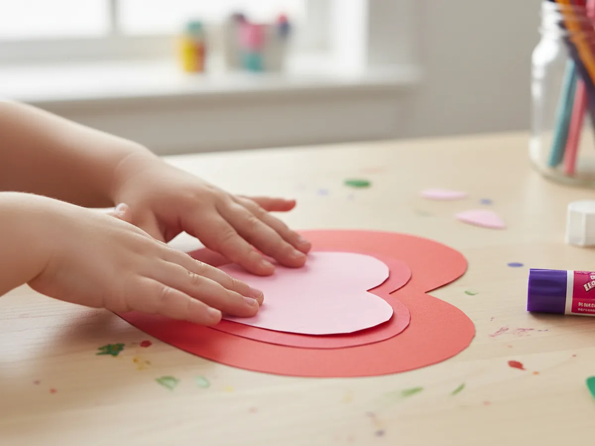
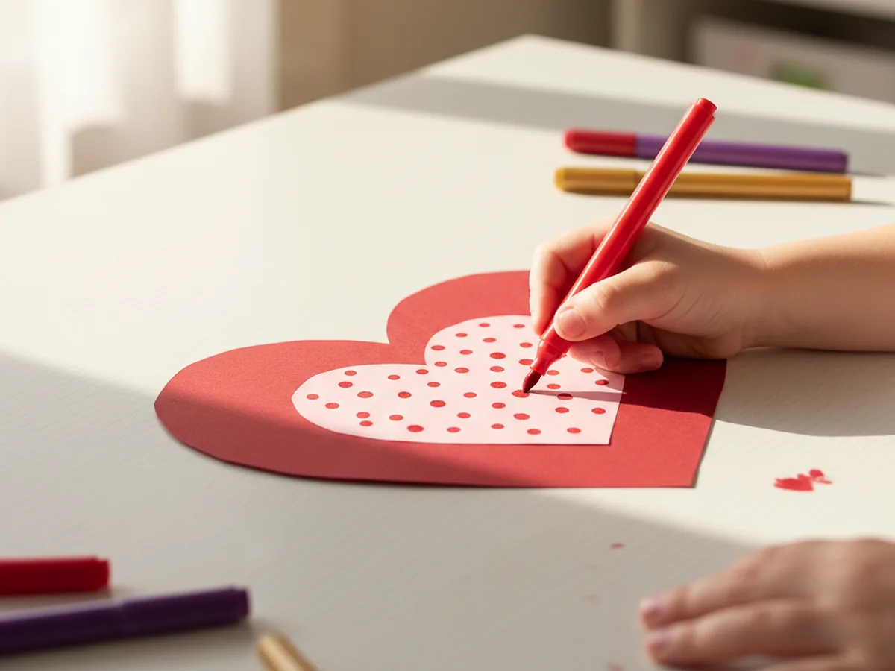
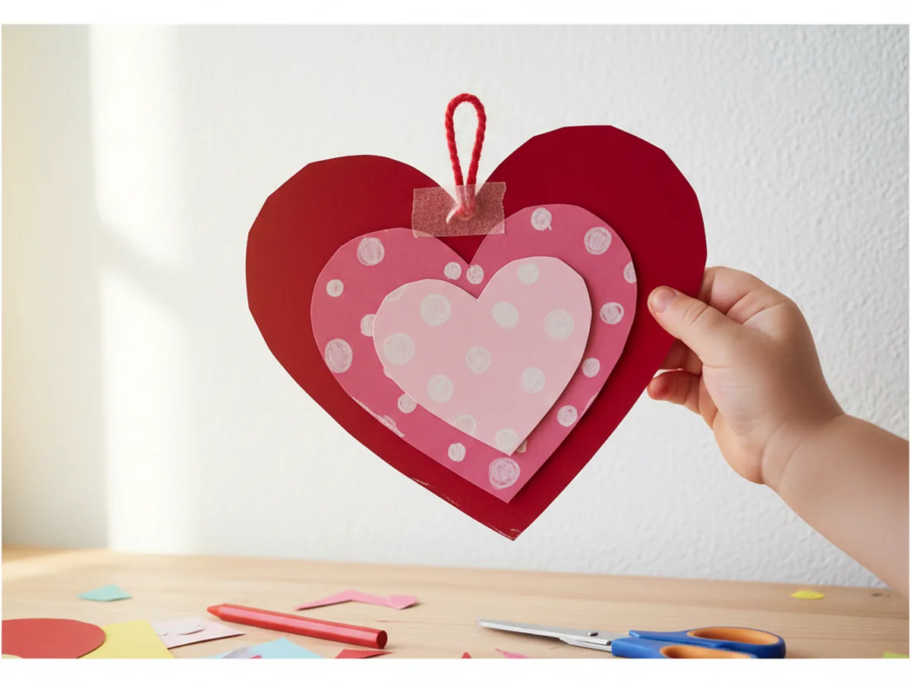

Hearts are one of the most universally loved shapes, and this paper heart craft is one of those projects that feels meaningful every single time you make it. All you need is some construction paper, scissors, a glue stick, and a handful of markers. No special skills, no tricky techniques, no mess to dread. Whether you are making it as a sweet decoration, a little gift, or just a fun afternoon activity, this easy paper heart craft delivers every time.
The folding and cutting method makes the whole thing beautifully simple. Even kids as young as 3 can get involved with the cutting and decorating steps, and the layered result looks so much more impressive than the effort required. It is one of those crafts where the process is just as sweet as the finished product.
Why Kids Love This Craft
There is something deeply satisfying about folding a plain piece of paper and cutting out a perfect heart shape. When children unfold the paper and see the symmetrical result, their eyes light up every time. It feels like a little bit of magic, and that reaction never gets old.
This paper heart craft for kids also gives children real ownership over the process. They choose the colors, they make the cuts, and they decide exactly how to decorate the finished heart. That sense of creative control is wonderful for building confidence and independence. The project is short enough that even younger children stay engaged from start to finish, and the result is something they genuinely feel proud of.
Cutting along curved lines is also great fine motor practice, helping children develop hand strength and scissor control in a way that feels playful rather than like an exercise. The decorating step at the end is completely open-ended, which means every child's heart turns out unique. And that uniqueness is exactly what makes the finished craft so special to them.

What You'll Need
Here is everything you will need for this simple paper heart craft. Lay it all out before you start so the activity flows without interruptions.
- Crayola Construction Paper (240 sheets, assorted colors), choose red and pink sheets for the classic heart look.
- Fiskars Training Scissors for Kids, spring-action and blunt-tipped, safe for ages 3 and up.
- Elmer's School Glue Sticks (30-pack), washable and easy for small hands to control.
- Crayola Washable Broad Line Markers, great for decorating with dots, stripes, and patterns.
- A pencil, for drawing the half-heart outline before cutting.
- A short length of yarn or ribbon, to add a loop hanger on the back.
- Tape, for securing the yarn loop at the back.
Step-by-Step Instructions
This paper heart craft step by step is easy to follow even for complete beginners. Take your time with each step and let your child do as much as they can independently.
Step 1: Fold and Trace Your Large Red Heart
Take a full sheet of red construction paper and fold it in half lengthwise, with the fold running vertically down the center. This fold is the secret to getting a perfectly symmetrical heart. Once the paper is folded, use a pencil to draw half of a heart shape along the folded edge. Start at the very top of the fold, curve outward and upward, then sweep back down to a point at the bottom of the fold. The rounded curve does not need to be perfect. A gentle, wide curve works beautifully and gives the heart a friendly, rounded look that kids love.

Step 2: Cut Out the Red Heart
With the paper still folded, cut along the pencil line you just drew. Keep the fold in place as you cut so both halves are cut at exactly the same time. This is what creates the symmetry. Once you have cut all the way around the curve and down to the point at the bottom, carefully unfold the paper to reveal your big, beautiful red heart. Most kids react to this moment with genuine surprise and delight, especially the first time they try it. It really does feel like a little bit of paper magic.
For little ones who are still developing their scissor skills, let them cut the straight portions of the fold while you guide the scissors through the more curved sections. Working together on this step is a lovely way to keep the activity moving smoothly. ✂️

Step 3: Make the Smaller Pink Heart
Now take a sheet of pink construction paper and repeat the same folding and cutting process to create a second, smaller heart. This time, draw your half-heart shape noticeably smaller than the red one. You want the pink heart to sit inside the red heart with a visible red border all the way around it, about a finger-width of red showing on every side. The visual contrast between the red outer layer and the pink inner layer is what gives this paper heart craft its sweet, layered look.

Step 4: Glue the Hearts Together
Apply a generous layer of glue stick to the back of the pink heart, making sure to get close to all the edges. Then carefully center it on top of the red heart and press it down firmly with flat palms. Hold it for a count of ten to let the glue catch properly. Step back and check that the red border is showing evenly on all sides. If the pink heart is slightly off-center, gently lift and reposition it while the glue is still fresh. Once it looks just right, give it another firm press and leave it to set for a minute.

Step 5: Decorate with Markers
This is where the craft really becomes your child's own. Using washable markers, invite your child to decorate the pink heart any way they like. Polka dots in red or gold are a classic choice and look stunning against the bright pink background. Swirls, small stars, zigzag borders, stripes, or tiny drawn flowers all work beautifully too. Encourage your child to fill the pink area generously. The more colorful and expressive the decoration, the more personality the finished heart has.
There are no rules here. If your child wants to write a name, draw a little face, or cover the whole thing in rainbow stripes, that is absolutely perfect. The decorating step is their moment to shine, and the result will be all the more special for it. 🎨

Step 6: Add the Ribbon Hanger
To finish, cut a short piece of yarn or ribbon (about 15 centimeters works well), fold it in half to form a loop, and tape or glue the two loose ends to the back of the red heart at the top center point. Make sure the loop is secure by pressing a piece of tape firmly over the ends. Flip the heart over and give the loop a gentle tug to check it holds. Now your finished paper heart craft is ready to display, hang from a doorknob, attach to a card, or give as a sweet handmade gift to someone special.

Variations to Try
Valentine's Day Card Version: Skip the ribbon hanger and instead fold a piece of white cardstock in half to make a card base. Glue the finished layered heart to the front of the card and have your child write a message or sign their name inside. It makes one of the most heartfelt handmade gifts a child can give, and it costs almost nothing.
Tissue Paper Layered Heart: Replace the plain pink inner heart with a heart covered in small torn pieces of red and pink tissue paper, glued on like a mosaic. The overlapping tissue pieces create a beautiful jewel-toned texture. This version is lovely for older children (ages 5 and up) who enjoy more detailed work and want a more intricate finished result.
Mini Heart Mobile: Make five or six smaller hearts in different shades of red, pink, and white, then attach each one to a length of yarn at different heights. Tie all the yarn pieces to a wooden stick or a straw and hang it in a window or doorway. The hearts catch the light and sway gently, creating a sweet, whimsical decoration your child will be proud to display.
Final Thoughts
This paper heart craft is one of those reliably joyful projects that works for almost any occasion and any age. It takes about 20 minutes from start to finish, uses only basic supplies most families already have at home, and creates a finished result that genuinely feels sweet and special. Most importantly, it gives you and your little one a real shared moment of making something together, one that feels meaningful long after the craft is done. ❤️
If your child makes their paper heart, share a photo on Pinterest and pin this article so other moms can find it too. Happy crafting!
More Crafts You'll Love
If your child loved making hearts, these other fun paper crafts are a perfect next step: